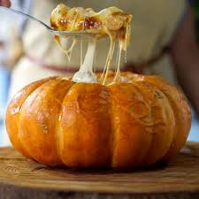
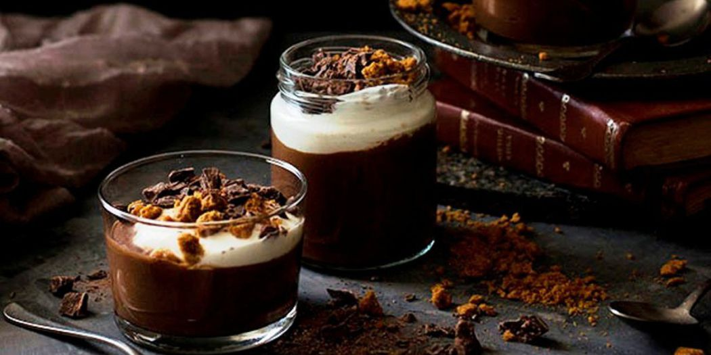

Pumpkim Shrimp

- 1 large pumpkim
- 1 large pumpkim
- 8 chopped garlic cloves
- 1 ½ chopped onion
- salt, black pepper
- lemon juice
- 3 tbs olive oil
- 1kg fresh shrimp
- 2 chooped tomatoes
- 1/2 cup of tomato paste
- 1/4 bunch of cilantro
- 1 chili peppers(optional)
- 1 can of milk or table cream
- 1 cup of cream cheese
- Open the pumpkin, remove the seeds. Reserve.
- Mix 5 garlic cloves, with ½ onion, black pepper, salt and oil.
- Rub this paste inside the pumpkin, cover and bake at 180 degrees for 40 minutes.
- Season the prawns with salt, pepper and lemon juce. In a hot pan, add olive oil, brown the prawns, and set aside
- Sauté the remaining onion, garlic and add the tomatoes and cook for 10 minutes.
- Add the cilantro, pepper, milk cream, cream cheese, shrimp and correct the salt.
- Cover with shredded mozzarella cheese.
- Bake in the preheated oven for 10 minutes or until browned
Chocolate Pumpkim Cream

- 2 dates
- 1 cup roasted pumpkin puree
- 1/2 cup natural Greek yogurt
- 125 g melted dark chocolate
- 1 tbsp Cocoa Powder
- 1/2 teaspoon cinnamon powder
- 1/4 teaspoon ginger powder
- 1/2 teaspoon vanilla extract
- a pinch of salt, nutmeg and cloves
- Put all the ingredients in a food processor and grind until you get a homogeneous and silky mixture.
- Place the cream in two larger, greedy glasses or in four smaller portions.
- Cover the bowls or cups with cling film and chill.
- Serve with a few spoonfuls of Greek yogurt, crushed cookies and chopped chocolate.